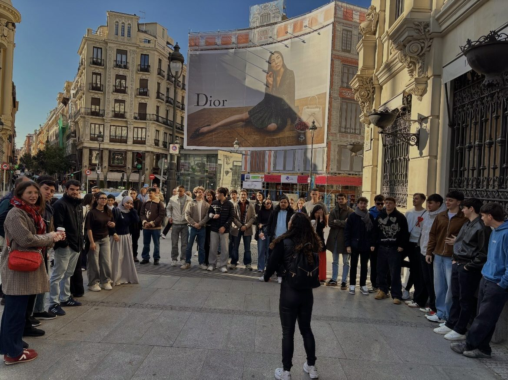
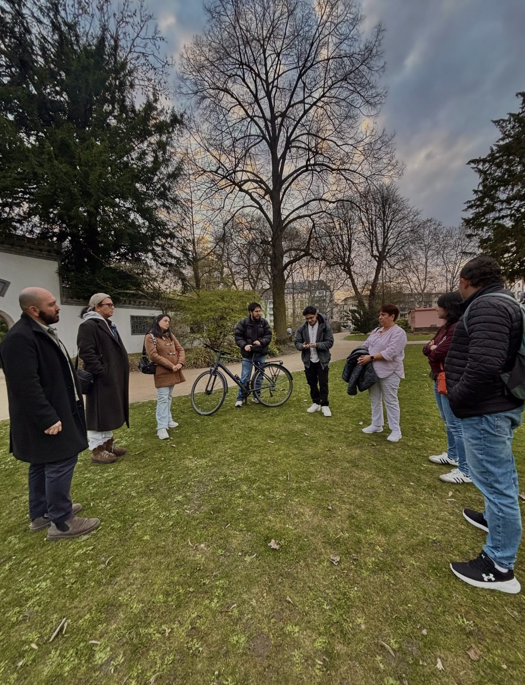
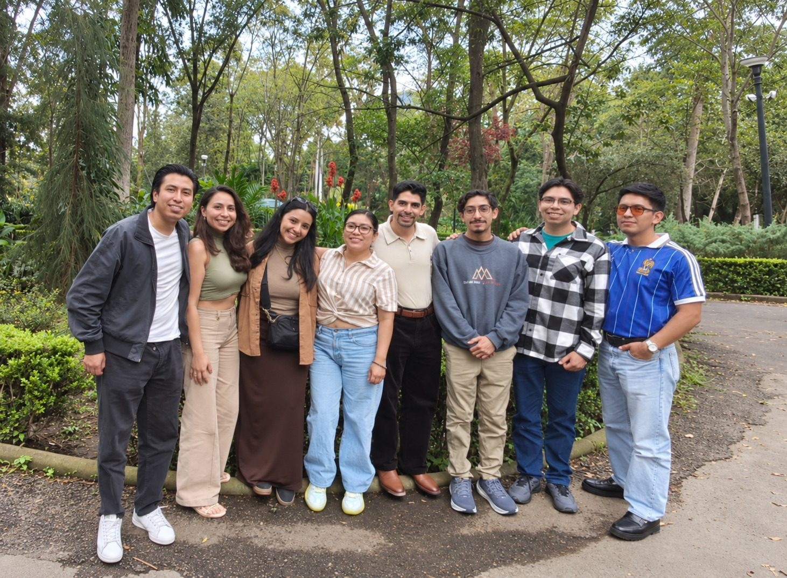
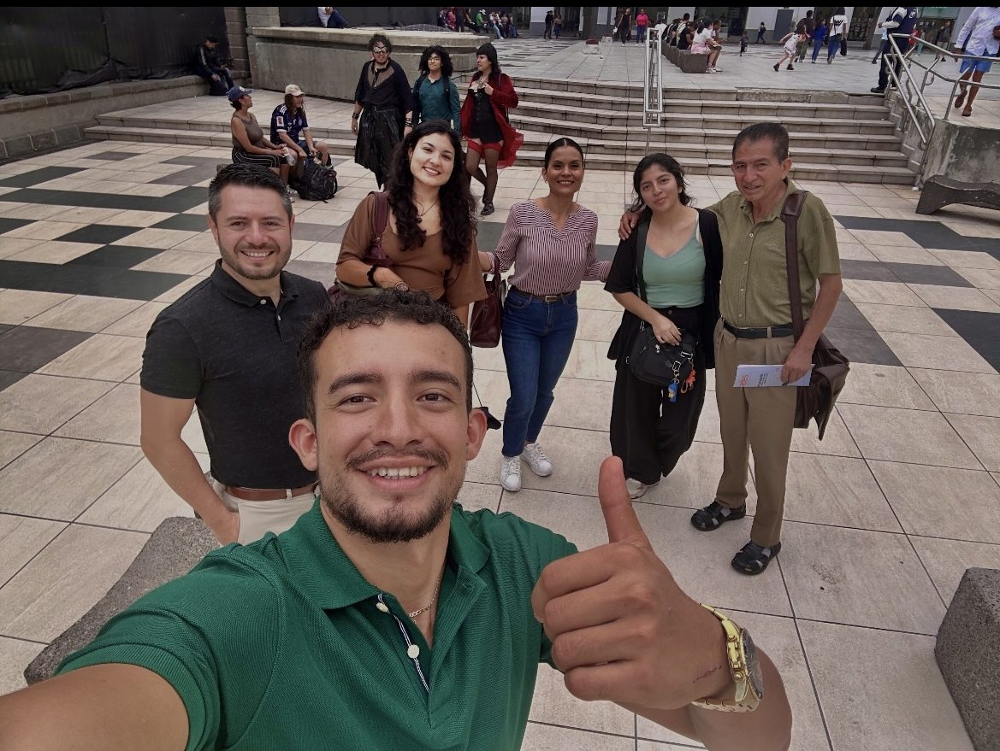
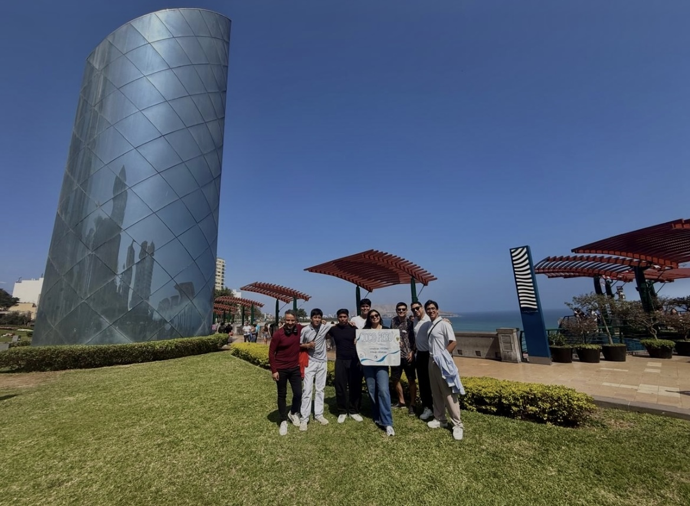
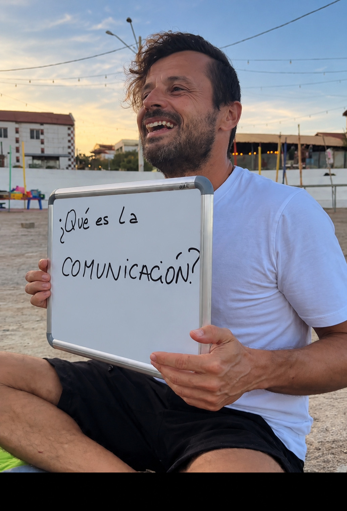
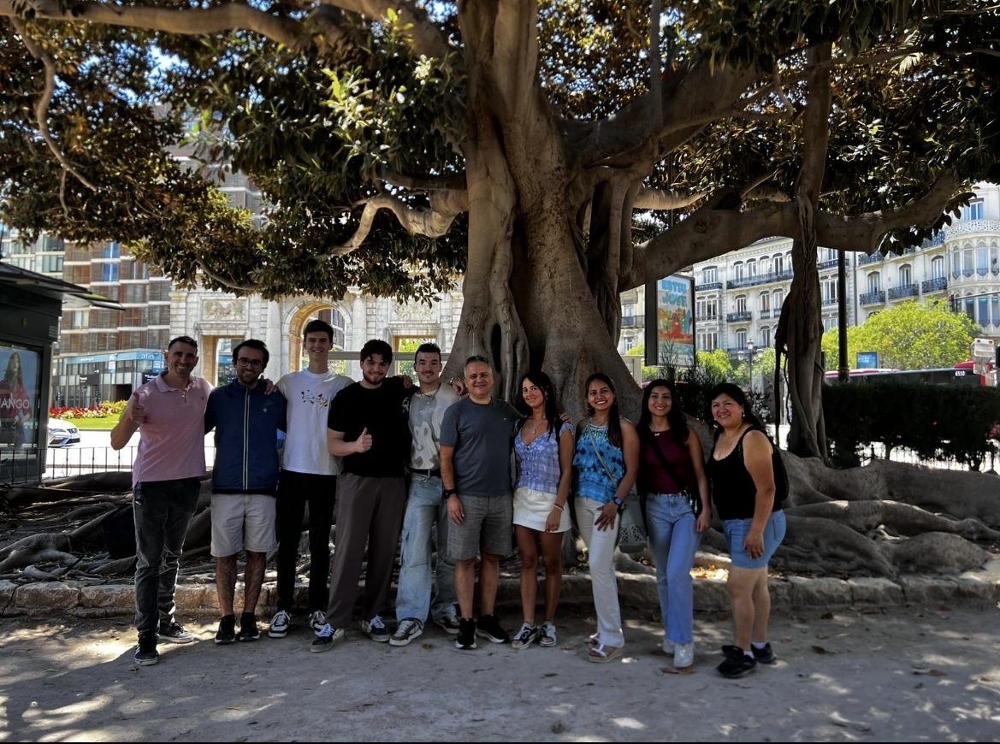
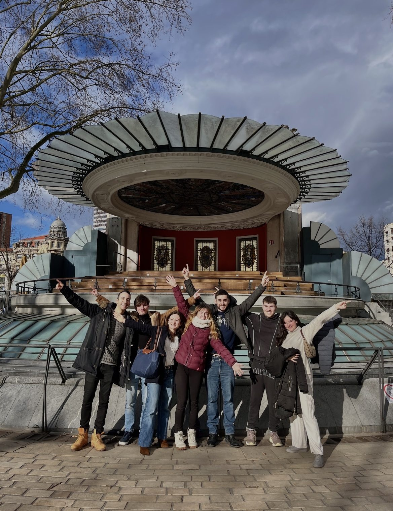

← Volver al inicioICO ALREDEDOR DEL MUNDOUna comunidad. Distintas ciudades.
La misma intención: comunicar mejor.
Monterrey forma parte de una comunidad que ha cruzado ciudades, países y culturas.
Una comunidad que ha cruzado fronteras
11 países
🇲🇽 México
Monterrey · CDMX · Guadalajara
🇪🇸 España
Madrid · Barcelona · Valencia · Mallorca · Andalucía · País Vasco · Aragón · Catalunya
🌎 Latinoamérica
Costa Rica · Ecuador · Perú · Brasil · Argentina · Colombia · Venezuela
🌍 Otras ciudades
Miami, EE. UU. · Frankfurt, Alemania
EXPERIENCIAS EN DISTINTAS CIUDADES
Desliza para recorrerlas.

🇪🇸Madrid, España

🇩🇪Frankfurt, Alemania

🇲🇽CDMX, México

🇨🇷Costa Rica

🇵🇪Perú

🇧🇷Brasil

🇪🇸Valencia, España

🇪🇸País Vasco, España